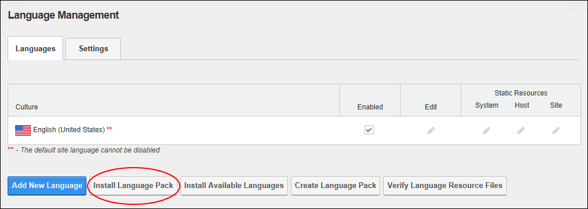

Installing a Language Pack
How to install a language resource package using the Languages module. This will install the language pack across all sites within this installation. Restricted to SuperUsers.
- Navigate to Admin > Advanced Settings >
 Languages - OR - Go to a Languages module.
Languages - OR - Go to a Languages module.
- Select the Languages tab.
- Click the Install Language Pack button located at the base of the module.

- Complete the Install Extension Wizard. See "Using the Install Extension Wizard"
-
You are now returned to the Languages module where the newly installed language is displayed in the Culture grid. Installed languages must be manually enabled on a site. This allows a SuperUser to install the language and an editor or Administrator to enable it at a later time.